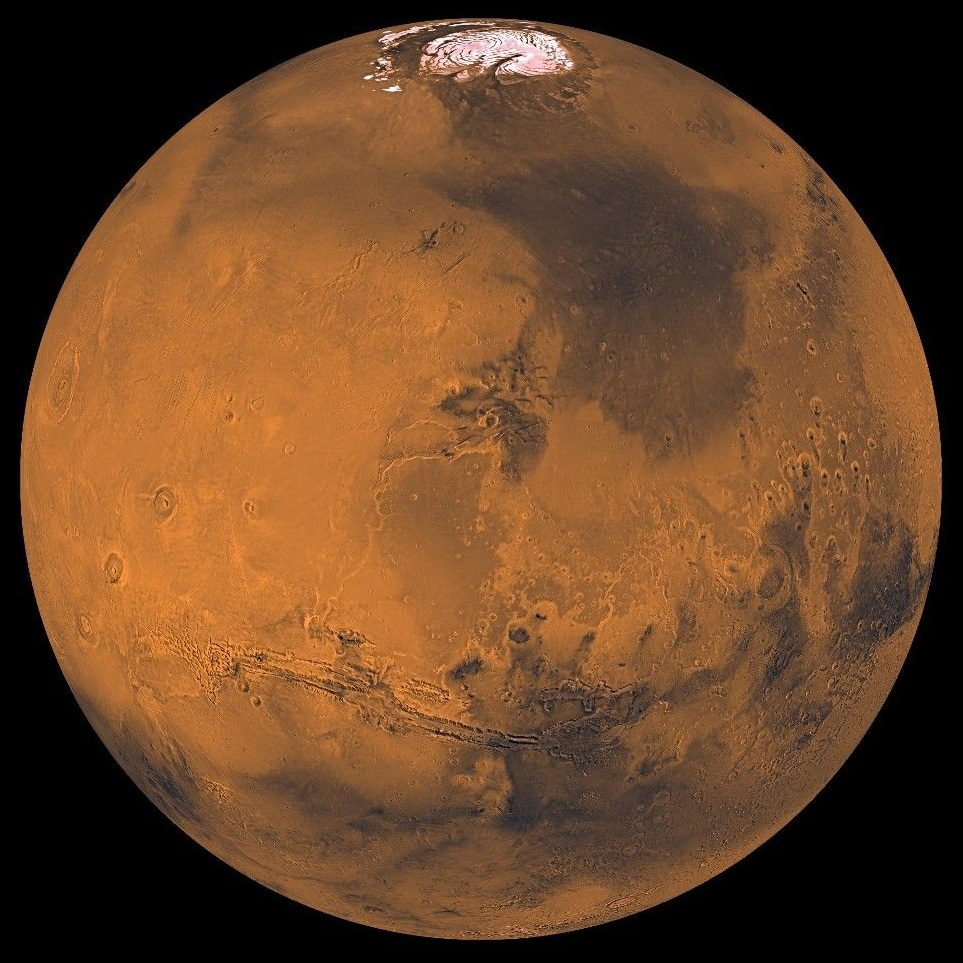
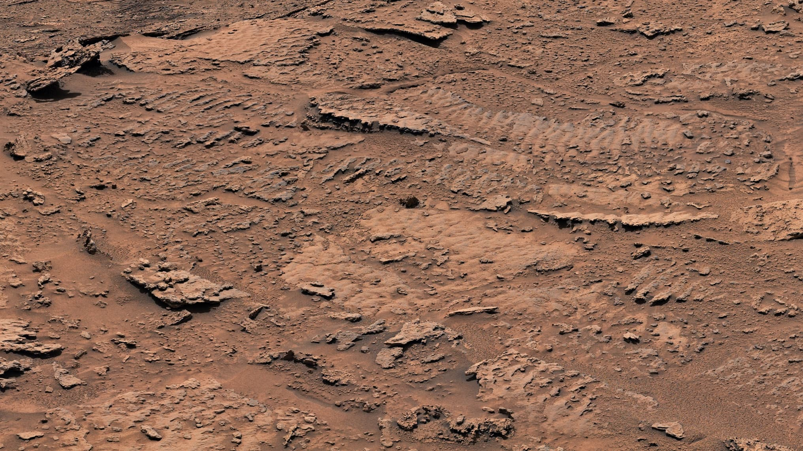
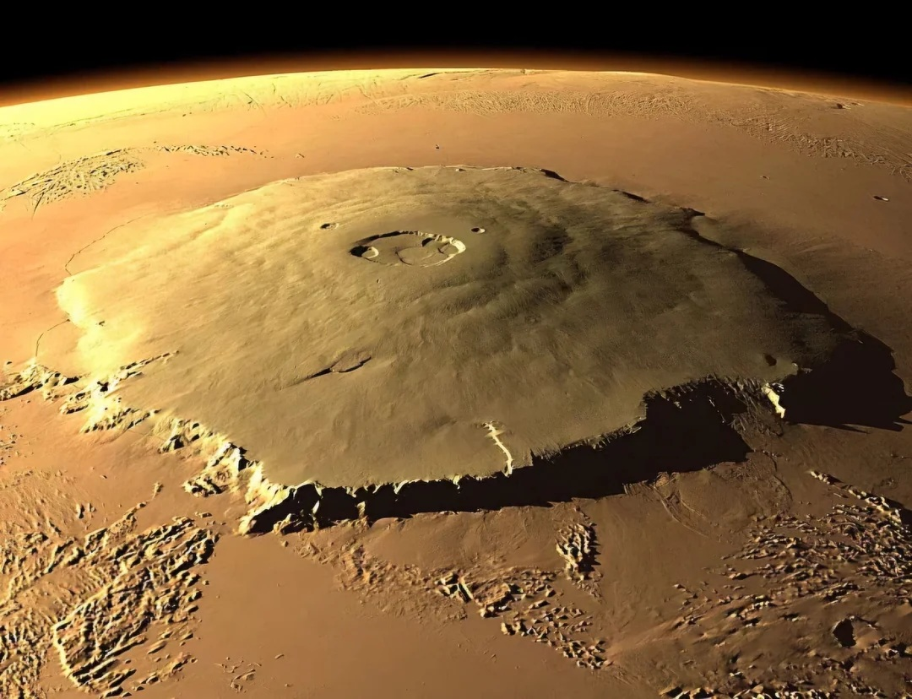
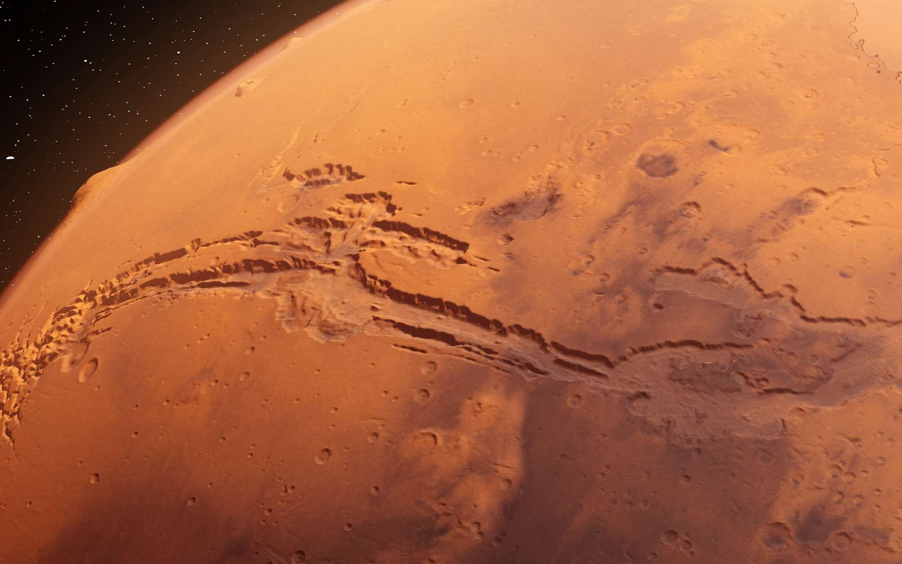

• Type : Planète tellurique (rocheuse)
• Diamètre : 6 779 km (environ la moitié de celui de la Terre)
• Distance du Soleil : 227,9 millions de km
• Durée d'un jour : 24,6 heures
• Durée d'une année : 687 jours terrestres
• Nombre de satellites : 2 (Phobos et Deimos)
• Température moyenne : -63°C
• Atmosphère : Principalement composée de dioxyde de carbone (95%)
Mars, surnommée la "planète rouge" en raison de sa couleur caractéristique due à la présence d'oxyde de fer (rouille) à sa surface, est la quatrième planète du système solaire. Elle fait l'objet d'un intérêt particulier car elle présente des caractéristiques qui suggèrent qu'elle a pu abriter la vie dans le passé et pourrait potentiellement accueillir des colonies humaines dans le futur.
Mars possède des caractéristiques géologiques remarquables, notamment le plus grand volcan du système solaire, Olympus Mons, qui s'élève à près de 22 km d'altitude, et Valles Marineris, un système de canyons qui s'étend sur plus de 4 000 km de longueur.
Mars a été explorée par de nombreuses missions spatiales depuis les années 1960. Les premières images détaillées de sa surface ont été obtenues par les sondes Mariner dans les années 1960 et 1970. Les missions Viking 1 et 2 ont été les premières à se poser avec succès sur Mars en 1976.
Plus récemment, des rovers comme Sojourner, Spirit, Opportunity, Curiosity et Perseverance ont exploré la surface martienne, tandis que des orbiteurs comme Mars Reconnaissance Orbiter et Mars Express ont cartographié la planète depuis l'espace. En 2021, l'hélicoptère Ingenuity est devenu le premier appareil à effectuer un vol motorisé sur une autre planète.
L'un des objectifs principaux de l'exploration de Mars est la recherche de signes de vie passée ou présente. Des preuves suggèrent que Mars possédait autrefois des océans d'eau liquide et une atmosphère plus dense, conditions potentiellement favorables à l'apparition de la vie. Des traces d'écoulement d'eau récent ont également été détectées, renforçant l'hypothèse que de l'eau liquide pourrait encore exister sous la surface.
Mars est considérée comme la prochaine grande étape de l'exploration spatiale humaine. Plusieurs agences spatiales et entreprises privées prévoient d'envoyer des missions habitées vers Mars dans les prochaines décennies. Ces missions pourraient établir les premières colonies humaines permanentes sur une autre planète.

Surface de Mars photographiée par le rover Curiosity

La plus haute montagne du système solaire, Olympus Mons sur Mars. Elle a une hauteur de 21,9 km, le mont Everest n'a "que" 8,8 km de haut.

Valles Marineris, le grand canyon martien. Il s'étend sur environ 4 000 kilomètres de long, soit près d'un quart de la circonférence de Mars, et peut atteindre jusqu'à 7 kilomètres de profondeur. Ce système de canyons a été découvert par la sonde Mariner 9 en 1971, et son nom rend hommage à cette mission.
Chez Cosmos Explorer, nous proposons plusieurs façons de découvrir et d'explorer la planète Mars :
• Observation télescopique : Lors de nos soirées d'observation, vous pourrez observer Mars à travers nos télescopes de haute précision lorsqu'elle est visible dans le ciel nocturne.
• Exploration virtuelle : Notre simulateur de réalité virtuelle vous permet de marcher sur la surface martienne et d'explorer ses sites les plus emblématiques comme si vous y étiez.
• Ateliers éducatifs : Participez à nos ateliers sur la géologie martienne et l'histoire de son exploration pour approfondir vos connaissances.
• Conférences spécialisées : Assistez à nos conférences données par des experts en planétologie et en exploration spatiale.
Pour plus d'informations sur nos programmes d'exploration de Mars, consultez notre page d'exploration ou contactez-nous.